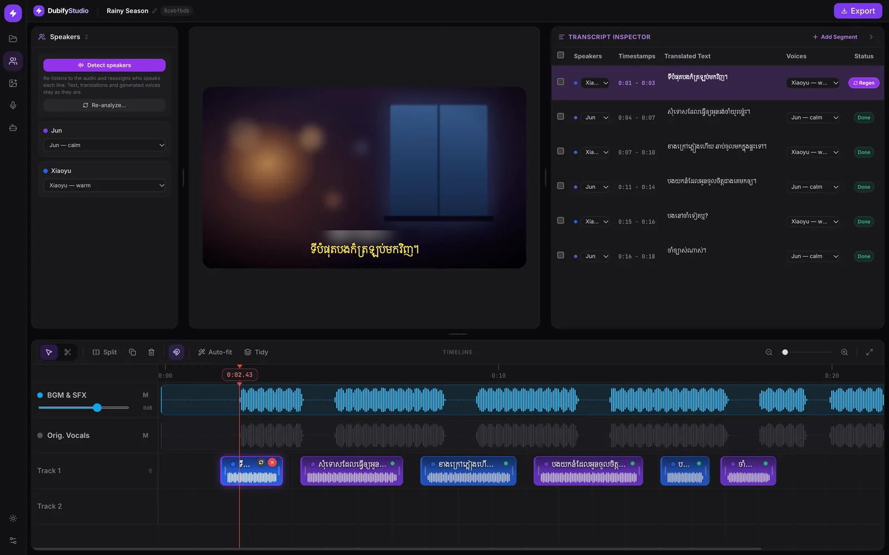

Lines with speakers
Each line is timed and labelled with who says it. Already have subtitles? Studio can start from those.
Movelo takes your videos to new audiences. Our Mac app, Movelo Studio, dubs Chinese videos into Khmer: it translates every line, gives each speaker a natural voice and keeps the original music.
Free for Macs with macOS 11 or later, on Apple Silicon or Intel.

How it works
Drop in a video. Studio separates the dialogue from the music and sound effects, so the original soundtrack stays.
Every line is transcribed, matched to its speaker and translated into Khmer. Change any line before a voice is made.
Each speaker gets a natural Khmer voice. Export an MP4 with the new voices over the original music.
Features
Each line is timed and labelled with who says it. Already have subtitles? Studio can start from those.
Gemini translates with the whole scene in view. Fix any line, and fill in missed lines without touching your edits.
Describe a voice, or clone one from a short clip. It stays with that character in every episode.
Each clip is as long as its voice, tracks work like CapCut, a volume line sits on every clip, and every change can be undone.
Burn in Khmer subtitles, add your logo and blur the original captions. Save the layout for every episode.
Ask about names and wording across episodes, and approve the line edits it suggests, one by one.
Built for dubbing
Subtitles alone lose the voice. Studio carries the whole performance into Khmer: who speaks, how they sound and when each line lands.
Our app
The desktop editor for dubbing Chinese videos into Khmer. Free, for Apple Silicon and Intel Macs.
Explore Studio →Download Movelo Studio for Mac. It's free; you bring your own Gemini API key.